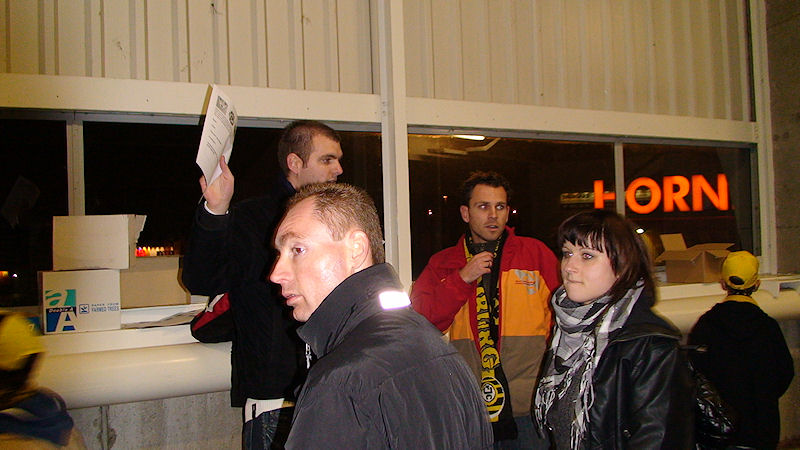
De supportersverenigingen van Roda verzamelen duizenden steunbetuigingen
tegen de fusie met Fortuna.
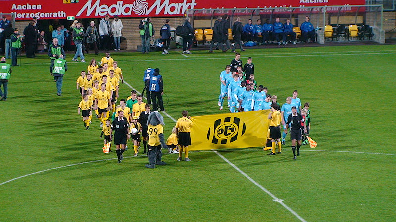
NEC speelt in baby-blauw.
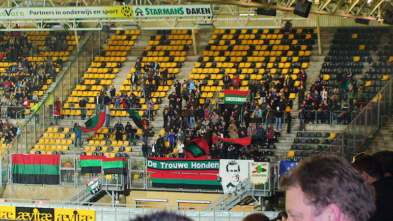
De 150 NEC-supporters dragen wèl de clubkleuren uit.
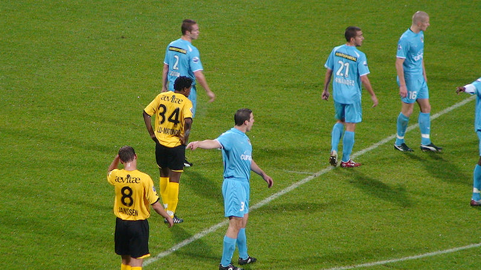
De toss is gewonnen door NEC. Door van speelhelft te wisselen tekent die
ploeg voor haar ondergang. Het zelfde lot onderging Willem II
afgelopen dinsdag.
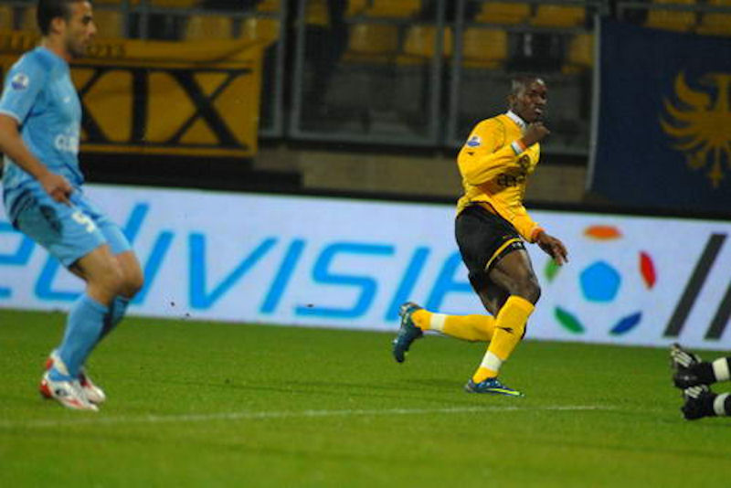
Roda begint lekker fel aan de wedstrijd. Na 5 minuten timet Fernandez
volledig mis bij een uittrap van Castro, waardoor Cissé alleen door
kan lopen op doel. Hij verschalkt doelman Babos in de korte hoek: 1-0, (5').
foto: sv-online
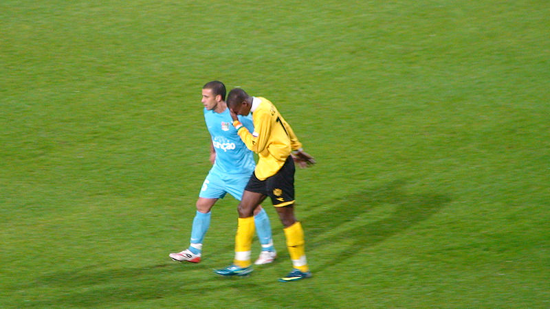
Cissé heeft een klap gehad van El-Akchaoui die daarna weer vriendjes wil
worden.
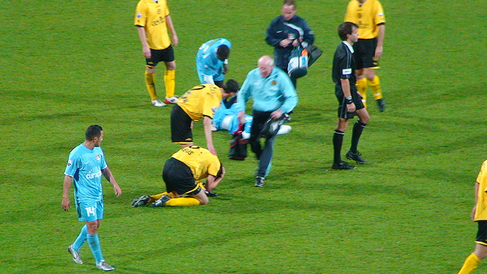
En alweer wint Norbert Keulen de sprint.
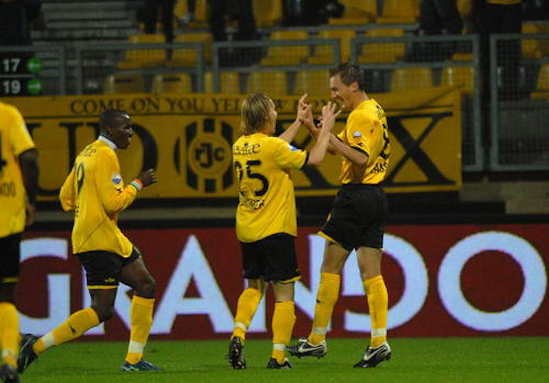
Babos keert een schot van Bodor, maar de afgeslagen bal wordt alsnog
ingetikt door Janssen: 2-0, (38').
foto: sv-online
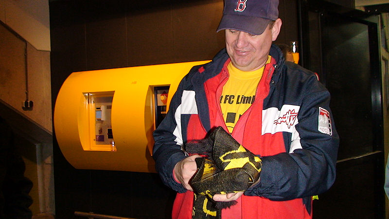
Vrolijke supporter met oud "Nooit FC Limburg" shirt en nieuwe "anti FCL"
sjaal.
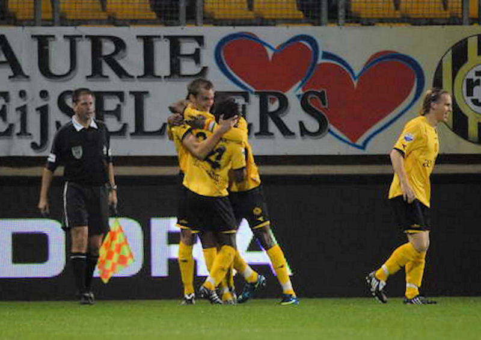
Janssen is veel sneller dan Davids bij een doorgekopte bal van Matondo en
kan de bal gemakkelijk binnen schuiven: 3-0, (46).
foto: sv-online
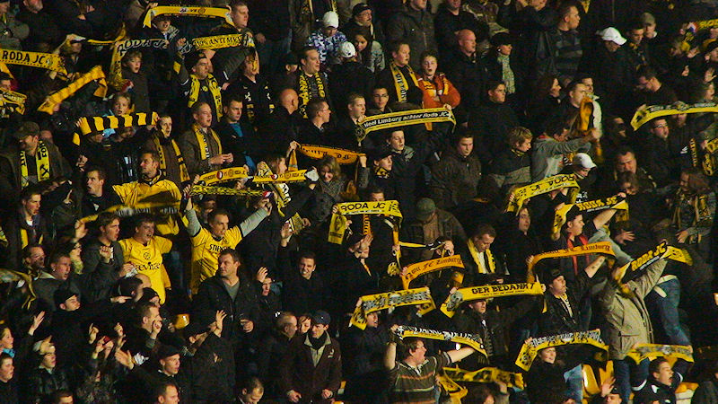
Blijde westmensen.
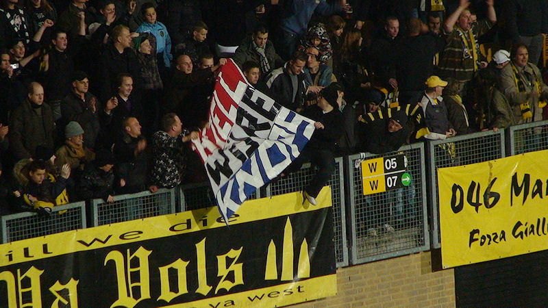
Spandoek voor Kjell Knops die tegen het einde van de wedstrijd speelminuten
gegund werd door Koopman.
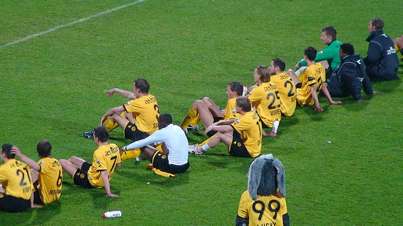
Alle tribunes worden uitbundig bedankt maar de "humba" is exclusief voor de
westzijde.
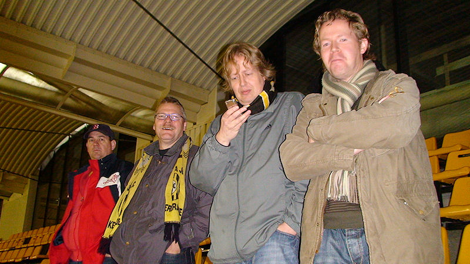
MarcO kan het nog steeds niet geloven en checkt de uitslag op zijn
mobieltje.
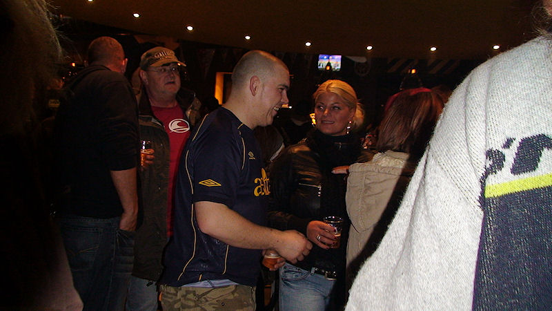
De overwinningsroes werd verder gevierd in de Kickoff.
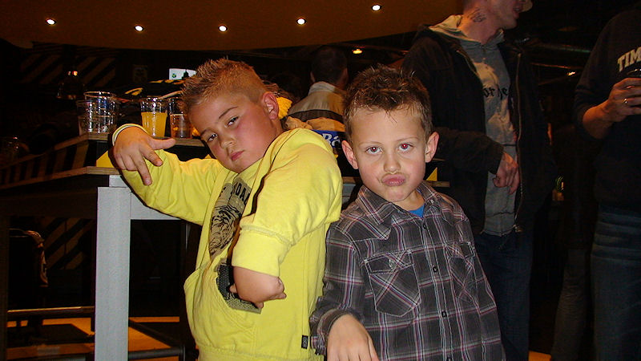
De reacties van deze youngsters werd uitgelokt met het woord Fortuna...
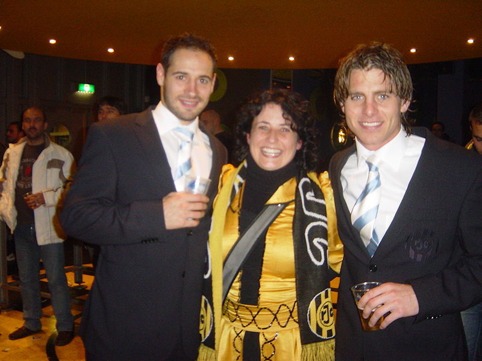
Monique houdt haar jurk aan zolang Roda blijft winnen. Behalve Bodor en
Meeuwis was ook De Man in de Kickoff maar deze was weer
snel verdwenen.
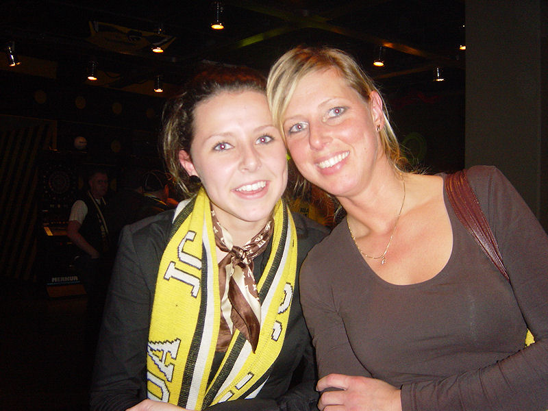
Deze meisjes willen alléén Roda-girl worden als de club niet fuseert met
Fortuna.
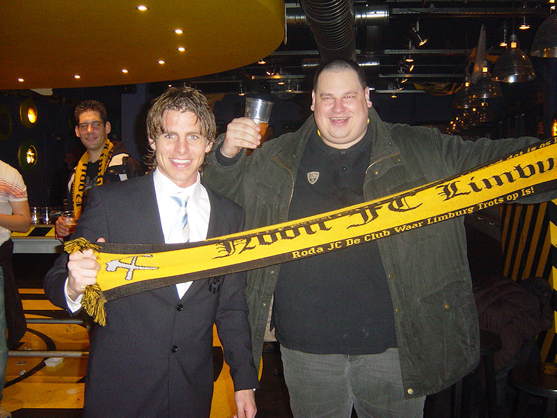
Marcel en Rob maken het nog maar eens duidelijk!